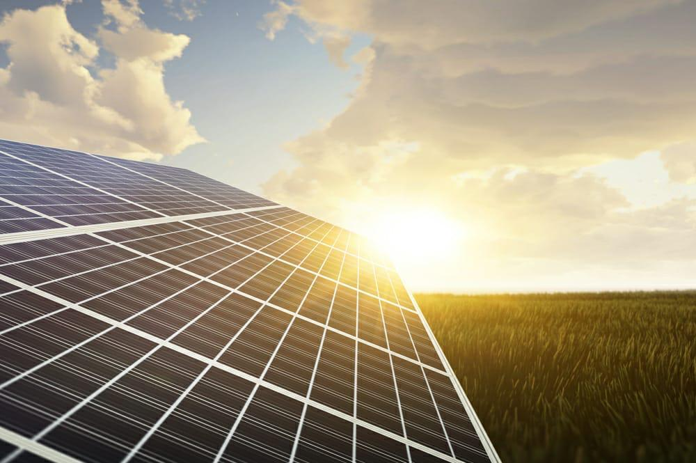
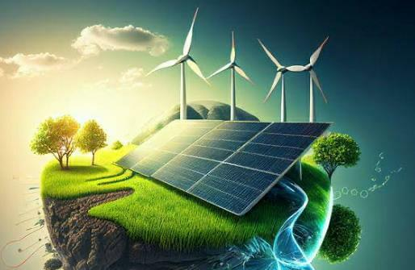
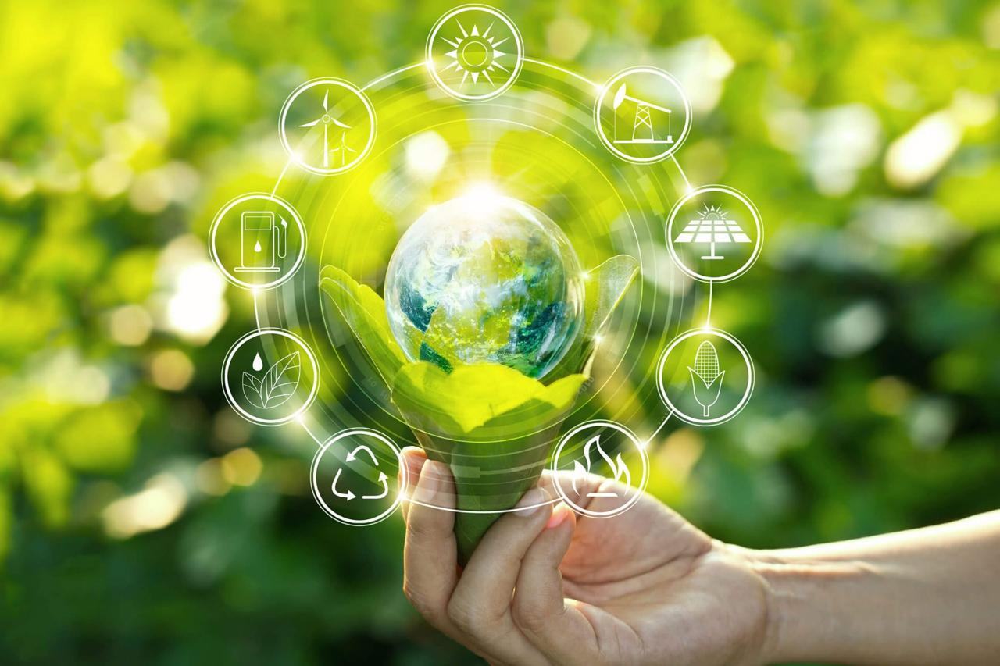
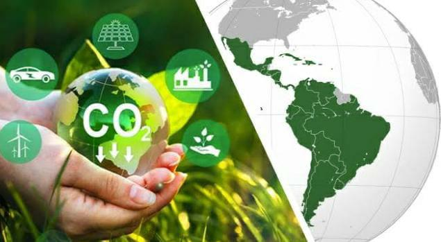
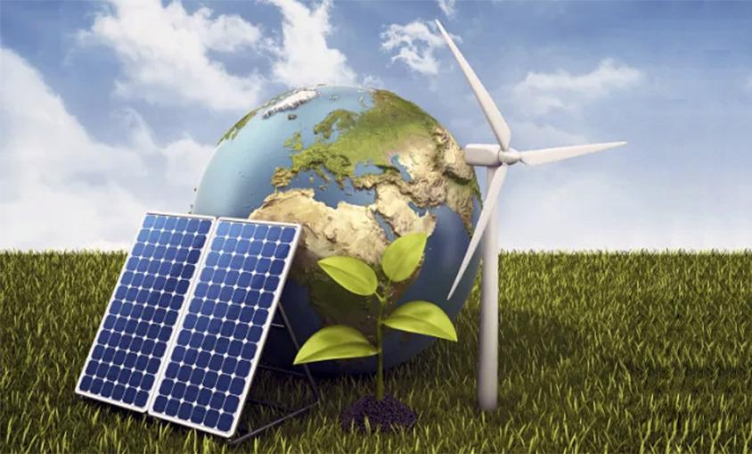

What are renewable energies?
Renewable energies are those sources of energy that are obtained from natural resources that are inexhaustible or that are They regenerate quickly in nature. These include solar, wind, hydroelectric, geothermal, and biomass energy. The main characteristic of renewable energies is that they are not depleted with their use and, therefore, they are considered more sustainable. in the long term compared to fossil fuels, which are finite and contribute to climate change. The capture and use of These forms of renewable energy may also have a lower environmental impact in terms of greenhouse gas emissions. and other pollutants compared to conventional energy sources.
Types of renewable energy and how they work
1-Solar Energy: This comes from the sun and can be captured and converted into electricity through photovoltaic solar panels or into heat through solar thermal collectors. It is a very versatile and abundant source of energy, especially in regions with high levels of solar radiation.
2-Wind Energy: It is generated from the wind. Wind turbines capture the kinetic energy of the wind and convert it into electricity. Wind energy is one of the fastest growing renewable energy sources in the world and It can be used both on land and in marine installations.
3-Hydroelectric Energy: It is obtained from the movement of water, generally by building dams and capturing the kinetic energy of moving water. Hydroelectric plants can be large scale, such as dams, or small scale, such as turbines installed in rivers.
4-Geothermal Energy: This comes from the heat generated inside the Earth. It can be harnessed by drilling geothermal wells to capture steam or hot underground water and use it to generate electricity or provide direct heating.
5-Biomass Energy: It is derived from the processing of organic matter, such as agricultural waste, forestry waste, municipal organic waste and energy crops, to produce biogas, liquid or solid biofuels, and heat. The Biomass is a versatile renewable energy source that can be used to generate electricity, heating and fuel for vehicles.
These are just a few of the main forms of renewable energy, and each has its own advantages and challenges. The transition towards greater use of renewable energy is essential to reduce greenhouse gas emissions. greenhouse effect and mitigate climate change.